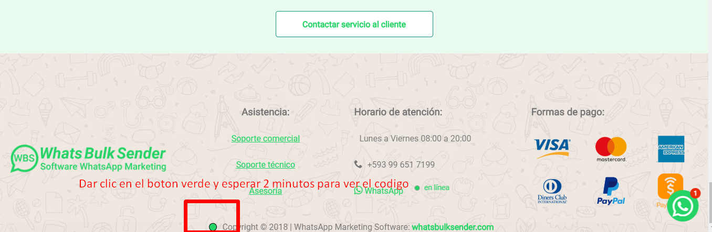
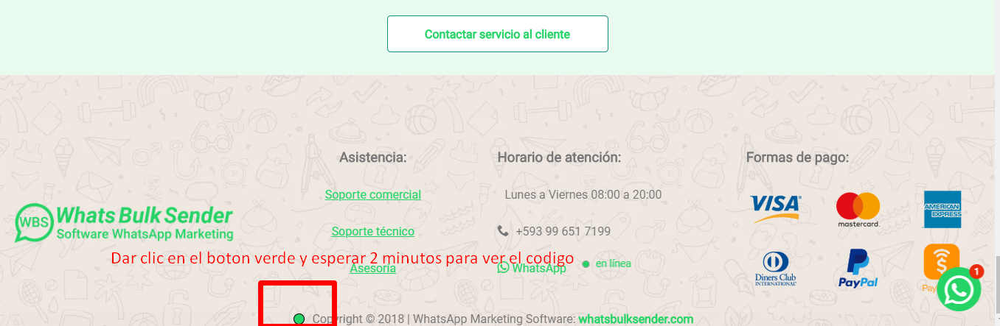

Tareas a realizar:
Ojo si tu foto de perfil no es de persona, abandona esta página, caso contrario sigue las instrucciones:
Indicaciones para futuras contrataciones: No elimine su comentario después de hacer la tarea, si se le solicita Compartir un post debe estar siempre visible y para todo el público, no lo oculte, serán revisados continuamente los links que se solicitan como prueba, si usted cumple con todas las indicaciones será escogido para nuestras próximas campañas exclusivas HG solo para los mejores microworkers.
No se permite traducir los comentarios de "ejemplo" al inglés, sé creativo/a.
Suerte Campeón/a.
- Dar clic en "Me gusta y Seguir esta página" (I.M.P.O.R.T.A.N.T.E)
- Hacer una recomendación corta, ir a opiniones:
- Visitar la página whatsbulksender.com y hacer 2 acciones, la primera copiar uno de los comentarios de abajo y pegar en el area de comentarios como muestra la imagen, y dos ir hasta el final de la pagina y dar clic en el punto verde espere en la página 2 minutos para mostrar el código de verificación, puede ver un ejemplos de los pasos a seguir en las siguientes imagenes, suerte campeón/a:
- Ir al siguiente fanpage:
https://bit.ly/FBwbsTAREAS
https://www.facebook.com/pg/WhatsBulkSender/reviews/
- Usar las palabras "mágicas"
- Felicitaciones
- Felicidades
- Muchas felicidades
- Besos y abrazos
- Usar uno o varios de estos emojis en el mensaje 🤗💪🙂🤝❤😘😍🤩
Ejemplos:
- Felcitaciones 🤝la capacitacion muy práctica y el software para hacer envíos masivos va de maravilla al 100% 🤗
- Excelente soporte técnico🤩, rápida respuesta, cumplen con lo ofrecido
- Los recomiendo al 100% me he ahorrado mucho tiempo gracias a la automatización de WhatsApp los recomiendo besos y abrazos 😘❤
- Es muy buena la herramienta y el servicio tècnico es inmediato💪🙂
Copia uno de los comentarios y pegalo en la web
Es una herramienta excelente, junto con el asesoramiento personalizado que recibí he multiplicado mis ventas, muy fácil de usar indispensable para cualquier negocio que quiera reactivarse.
Soy Administradora de varios conjuntos residenciales adquirí WhatsBulkSender para hacer envíos masivos a mas de 1360 condóminos y comunicar la gestión de sus conjuntos y de sus obligaciones, ahorrándome la mitad de mi tiempo, lo que me permitió cerrar contratos con nuevos conjuntos residenciales.
Soy Líder y consultora de belleza, el mercado cambio con el coronavirus y no podía salir a visitar a mis clientes, por lo que me toco manejar mi negocio solo por WhatsApp, el problema es que hay limitaciones de envió y con las listas de difusión, no les llegaba a todas mis clientes, los catálogos e información que enviaba, desde que uso la herramienta de WhatsApp marketing mis ventas aumentaron, con la capacitación personalizada aprendí hacer campañas profesionales y a organizar bien la información, deje de vender ahora me compran.
Implemente el chatbot en mi negocio de comida rápida y llevo 5 meses usándola de los cuales los últimos tres aumentaron las ventas, la configuración del bot me facilita la comunicación ya solo me encargo de preparar los pedidos y de hacer las entregas.
Soy Odontólogo y hace 4 meses tuve que prescindir de mi secretaria ya que no podía pagarle, con el cambio de semáforo volví a trabajar, contacte a mis pacientes y gracias a Dios empezaron a venir a mi consultorio, pero había días que no podía contestar mi WhatsApp, tenía citas copadas para calzas dentales y pacientes de ortodoncia, por lo que necesitaba alguien para que conteste, me llego una publicidad de esta maravillosa herramienta la probe y con la capacitación que recibí me ayudo muchísimo para automatizar las citas con mis pacientes.
Para mi emprendimiento, comunicar oportunamente al cliente genera empatía porque él va formando su expectativa respecto al servicio que va a recibir, así que es esencial tener informado al cliente en cada momento: las ofertas, descuentos y nuevos productos, chatear por WhatsApp con el cliente es como hacerlo de tu a tu, la personalización trae inconvenientes ya que es imposible que en tan sólo un día pueda ponerme en contacto con todos ellos, vi la necesidad de automatizar los envíos ya que me pasaba mucho tiempo enviando y respondiendo a mensajes frecuentes, con WhatsBulksender en 10 minutos envío lo que me demoraba todo el día comunicar las novedades de nuestra empresa con mensajes 100% personalizados con nombre, imagen, pdf y audios y el chatbot para que conteste a las preguntas frecuentes, por un valor pequeño para todo el trabajo que te ahorra y los beneficios que genera, saldrá mucho más caro contratar un asistente que automatizar tu mismo, es mi arma secreta.
Tengo un restaurante, que tras la pandemia estuve a punto de cerrar al no tener clientes físicos en mi negocio empece a comunicar por email y WhatsApp a toda la base de clientes que tenía registrados y trabajar bajo la modalidad de delivery, también hice publicidad en facebook e instragram para dar a conocer y la gente me pedía mi número de WhatsApp para saber más de mis productos, entendí que es la mejor vía para poder vender directamente, por email enviaba nuestras promociones pero nunca tuve respuesta como lo tengo con WhatsApp, a partir de junio aumento mis pedidos y es cuando conocí la herramienta de whatsapp marketing para hacer envíos masivos, una aplicación interesante que ahorra mucho tiempo y dinero, con el chatbot el cliente sigue las instrucciones y ya solo contesto para decirle que su pedido está en camino, cada día aprendo más sobre el manejo de las estrategias y el uso del software. la atención es al instante cada vez que llamo me resuelven los problemas tienen bastante paciencia y de verdad que se los recomiendo, es excelente tengan el éxito que tenemos nosotros.

 
